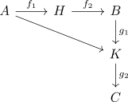
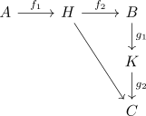

Kucera Theorem
Proposition
Let $\mathcal{C}$ be a category. Then $\mathcal{C}$ is the quotient category of a concrete category
assumig NBG and axiom of global choice
Proof
Choose a dense well-order $\leq$ on $\mathrm{Ob}(\mathcal{C})$ We define $\mathcal{L}$ as category containing
- $\mathrm{Ob}(\mathcal{C})$ as objects
- for objects $A,B \in \mathrm{Ob}(\mathcal{L})$ the hom-set $\mathrm{Hom}_{\mathcal{L}}(A,B)$ consists of pairs of morphisms $(f_1,f_2)$ where $f_1: A \rightarrow H, f_2: H \rightarrow B$ for $H \leq A, H \leq B$.
The composition of $(f_1,f_2): A \rightarrow B, (g_1,g_2): B \rightarrow C$ for $g_1: B \rightarrow K$ and $f_1: A \rightarrow H$ is defined as


Then the identity is given by $\mathrm{id}_{A} = (\mathrm{id}_{A} , \mathrm{id}_{A})$:
It follows, that for $(f_1,f_2): A \rightarrow B$ with $f_1: A \rightarrow K$, as $K \leq A$, that
resp.
concrete
Here it suffices to construct a faithful functor
as the hom-functor $\mathrm{Hom}_{\mathrm{Set}}: \mathrm{Set}^{\mathrm{op}} \times \mathrm{Set}^{\mathrm{op}} \rightarrow \mathrm{Set}$ is faithful and therefore also the composition $\mathrm{Hom}_{\mathrm{Set}} \circ \mathcal{U}$
Let
Thus by universal property of the product category, there exists a functor
relation
By the first isomorphism theorem for categories it suffices to give a functor from $\mathcal{L}$ to $\mathcal{C}$
Here consider
Then $\mathcal{F}$ respects the identity and composition.
source:
- https://www.sciencedirect.com/science/article/pii/0022404971900041?via%3Dihub